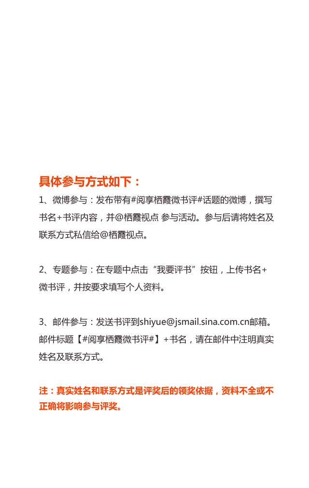

小王子
如果你存在于一颗行星，那么我看着这满天的繁星，就觉得他们都笑了起来”，小王子对于我是一场爱的启蒙，有关于驯养，跋涉，以及星辰斑斓的黄昏。总有一天我们会离开身边的玫瑰和小火山，走向更大的世界，而当终于我们成长，别忘记带着灵魂，回到故乡。
城门开
枯木逢春，时光可以倒流吗？没有人比你和这座城，更加遥远和寂寞。消逝的北京城，回不去的昨天。青灯寂寥，光影弥漫；尘梦婉转，一晃数年。你用文字构筑的城池，充斥着用诗性打捞的记忆。
长恨歌
长恨歌未央，世人独彷徨。一本沾染岁月尘土、满溢旧时气息的小说，娓娓道来，一场繁华旧梦。这梦诉说着王琦瑶从素净淡雅到杳无声息消失于世间的经历。蝴蝶翩跹，夹竹桃开落，置身旧上海的繁华魅影，孤独的身影依然无处可遁，只因她，消逝的青春，飞逝了的时间。与时光有关的东西，总是直指悲剧的东西。
平凡的世界
其实这个世界里的人大多是平凡的，但就算是平凡的梦想也是需要信念与勇气来实现的。或许对于这个庞大喧嚣不堪的世界我们是平凡的，但我们要在自己的小世界里做一个努力乐观向上的人。这本书带给我最大的力量就是，每个人与生俱来的世界不一样，越是平凡的世界，就越有理由去改变自己的世界。
解忧杂货店
东野圭吾的新书，虽然不是他最擅长的犯罪推理小说，但却用他最擅长的构思带给大家一个感人而又神奇的故事。世界很大，很可能我们都会有丝丝缕缕的联系而不自知，有时我们对别人温暖一点，某一个不相干的时间点我们恰会感受到这个世界的温度。
小王子
骄傲的玫瑰花还在寂寞的星球上等着逝去的爱重来，而勇敢的小狐狸已经决定不爱我的我不爱了。我们总是难以在爱的独木桥上保持平衡。爱我们的太轻，而我们爱的又太重。生命的轻与重，美与痛就这么如水般流过，身体老去逝去，回忆永远年轻。
弟子规
品之《弟子规》，文字浅近，适宜读颂，蕴含良习，传承人道，弘扬传统。践之，道理浅显，有规有矩，路径清晰，人人可为，事事可依。悟之，核心价值，叶落归根，广为传承，常读日践，振兴中华，中国梦圆。
不能承受的生命之轻
人们常常感叹的是不能承受的生命之重，《不能承受的生命之轻》这本书作者反过来说，这就进入了深层：人生就是履行责任背负重担，人人都有不能承受的生命之重。最沉重的负担同时也成了最强盛的生命力的影像。负担越重，我们的生命越贴近大地，它就越真切实在。
你的孤独，虽败犹荣
人生犹如行驶的火车，倒退的风景，以前迷茫，是因为四周与前方太黑暗，但貌似一切都在我们自己的掌握之中，无需羡慕，不需鸡血，耐得住寂寞，经得起推敲，自会拥有最有安全感的人生！其实我们的青春，我们的孤独，大都雷同。
活着
相信看完余华的《活着》，记忆最深刻的一句话就是：没有什么比时间更具有说服力了，因为时间无需通知我们就可以改变一切。长这么大，有时候在某一刻，甚至应该说是很多时候，我们都会突然迷失，找不到生活下去的理由。但是只有活着才会有一万种可能。
平凡的世界
平凡的磨砺在创造后的泥泞中蜕变出亮色的生活，但也注定留下蹉跎的疮疤，望见永跨不过的鸿沟。也许，我们最终是不必跨出各自的双水村的，双方绚烂的背景下，我们仍有平凡、壮丽而骄傲的生活。
小王子
我们的人生会经历各种各样的历险，作为过程的人生意义本就在于体验与奉献。在我们拼搏、竞争、心累的时候，以小王子这样孩子式的眼光反思成人的空虚、盲目，愚妄和死板教条，便会感到身为人类的孤独寂寞与没有根基随风流浪的命运。追求真善美，是孩子们最初的梦想，更是大人们需要坚定的理想。
文化苦旅
一支笔，一串脚印，悄悄走进历史深处，开启一场探索中华文化源流的灵魂之旅。一双深邃的眼睛，透过漫漫黄沙，追溯黄河文明的兴衰；一种文人情怀，心系家国命运，审视民族的未来；一颗赤子之心，沉醉于山水，又在山水中超拔，观照山水中的人文精神，纵观人类文明的进化。这是一场震撼心灵的文化洗礼。
悟空传
我想每一个人，都是从黑暗里走到光明.美酒浇灌荆棘，这条路上英雄和小丑共舞.重要的不是经历了什么，而是前方有什么.只要方向是对的，就该不顾一切走下去，带着人性的高贵与理性，走向正确的彼岸。
呼兰河传
民国时期的许多书无论什么时候来读都能深入人心，引发共鸣。我是看过《黄金时代》之后才读萧红的《呼兰河传》。经历一生坎坷的萧红在病榻上仍能以如此真挚、纯真的感触记述童年，并且同样不幸的经历中只记取美好的一面，对他人的不幸又投以充分的悲悯！联想到她颠沛、窘迫被人辜负的一生，我是含着泪读完她的童年，或喜或悲，但仿佛不远处，萧红在望着我说，嗨，不喜不悲。
百年孤独
一个浓缩的宇宙，一个自己的世界，一个家族的兴衰历史，一片土地上的沉默。每一寸土地都是寂寞的，每一个人都是孤独的，每一个存在都是被历史滚滚车轮推着向前的，在马孔多，是一片百年的孤独。
不过，一场生活
我们难过的其实不是心，而是时间雕琢后麻木的面孔，生活的无奈，每个人肯定有很多苦，有些人忍着一辈子，有些人就在时间里消失殆尽了，和谁在一起，谁又真的试着去问过你的内心世界，又或者根本也不太重要。
倾城之恋
虽然《倾城之恋》讲述了一个爱情故事，爱情一直在台前招摇、表演，但绑缚在它身上的细线却紧紧牵在命运的手中，是它在幕后指挥、拉扯。爱情是被动的、搀满杂质的，也是值得同情与哀怜的，它的牢固度与耐久度永远不能让人轻松。
多情剑客无情剑
这是古龙武侠的巅峰之作，确立了他独特的武侠风格，一举奠定了他与金庸并立的历史地位。古龙用刀削斧凿般锋利的笔法创造了一个包罗万象的江湖，对人性的冰冷刻画震撼人心。李寻欢身上有着古龙自己的影子，他和孙小红的喜酒，或许是古龙对自己、对读者的开解：人性的善恶都来源于执念。
红楼梦
一本人生百科全书，值得一读再读，并且常读常新。通过对人性的本质把握，跨越了时间和空间，用文学实现了永恒。